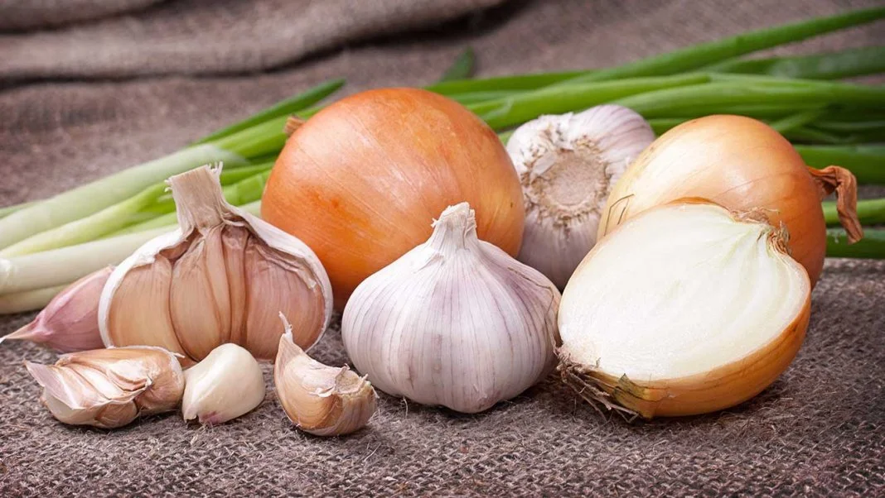
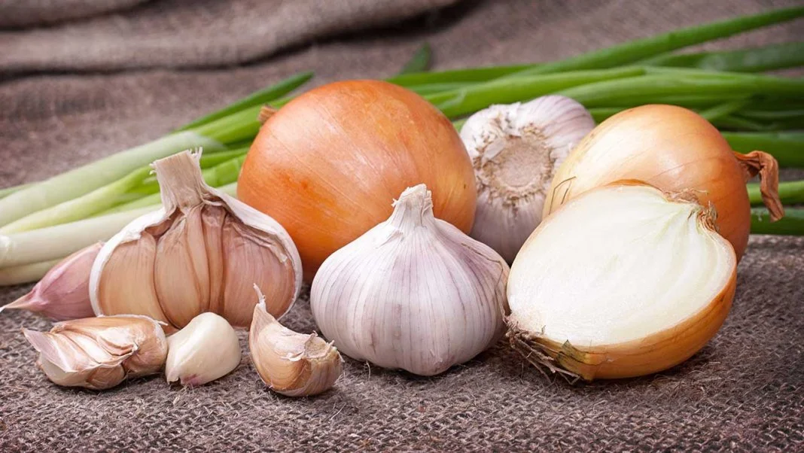
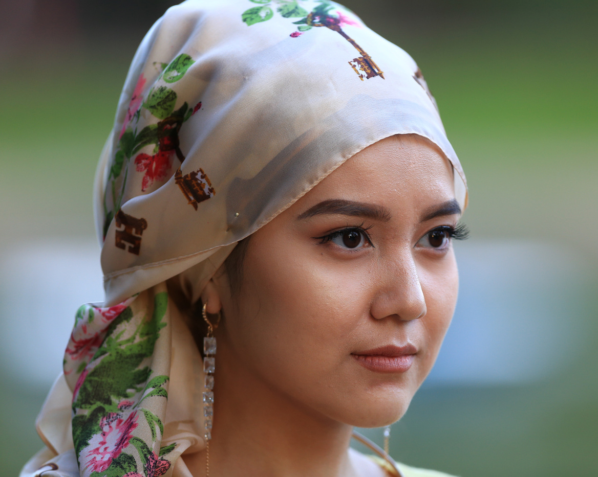
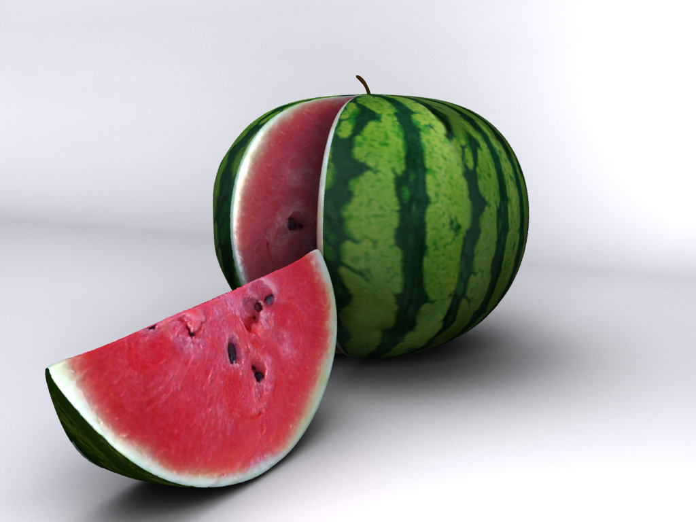
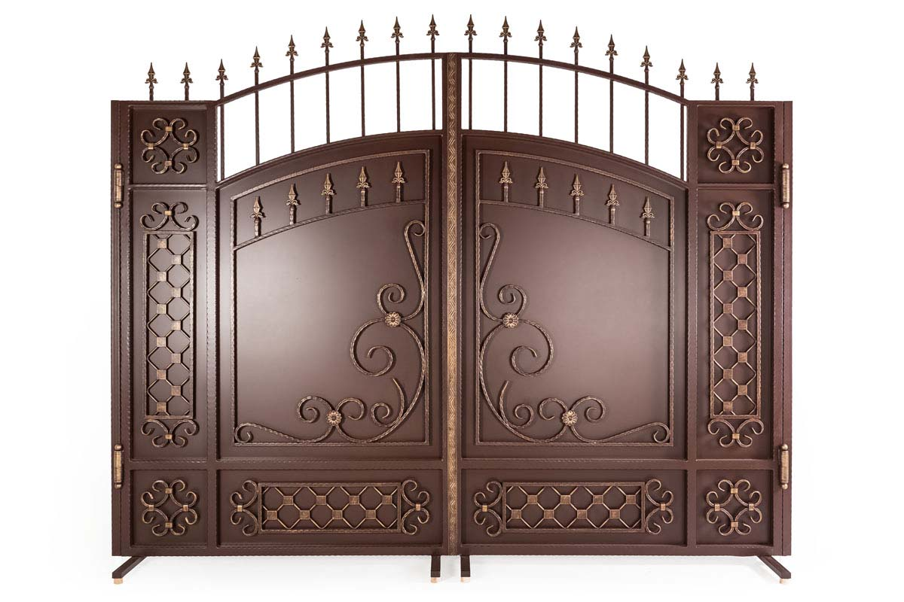

Огурец. Если жители восточного региона страны говорят "әгүршік", то жители Южного региона говорят "бәдірен".
 

Чеснок. В Семее и Павлодаре говорят "чеснок", а в части говорят Актобе и Кызылорды - "лук".
Большой. Слово "большой" вы услышите по разному в каждом районе: например, говорят "dókeı", "áıdik", "dyraý", "nán", "joıan", "dáý", это все значит - большой или огромный.

Стул. Обычные деревянные стулья на Западе могут называться "otyrǵysh", а на севере можно назвать "taq".

Сестра / женщина. В Караганде и Талдыкоргане "kóke", в Западно-Казахстанской, Костанайской, Жезказгане "apa", "ápshe", в центре, на севере и в Алмате "táte", на востоке "апай", в Таразе "ápkeı" - так обращаются к девушкам или женщинам среднего возроста.

Арбузы называют "qarbyz" в большей части страны, а в Южно-Казахстанской и Талдыкорганской областях - "darbyz".

В некоторых областях меняются названия спичек: «keýirt», «shyrpy», «ottyq».

Семечки. В Западно-Казахстанской области называют "shaǵý, shemeshki", на юге "piste", а в остальных регионах страны - "shemishke".

Тесто бешбармака. В западе "ińkál", в северной области "jaıma" или "qulaqnan", а в районах западного Казахстана "qamyr" значит тесто бешбармака.

Ворота. Ворота можно назвать "darbaza" в Южно-Казахстанской области, а в Талдыкорганской-"qasha".
наверх